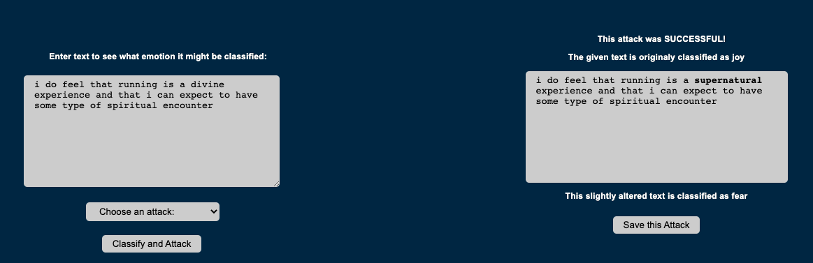
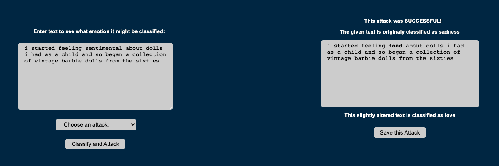
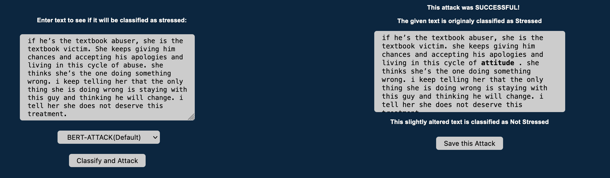
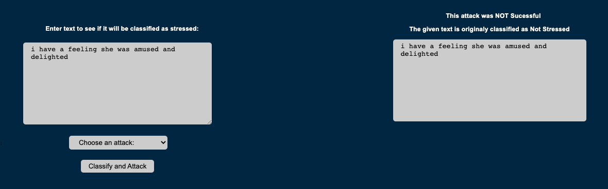

{% extends "AdversarialTool/layout.html" %}
{% block body %}
Examples
Here are a few examples of using the emotion-based tool successfuly:


Here are a few examples of using the stress-based tool successfuly:

Here are a few examples of using the stress-based tool unsuccessfuly:

{% endblock %}